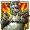
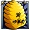

The objective of Bonus Bears is to obtain winning symbol combinations by spinning the reels.
To play the game:- Choose your coin size by clicking the + and – buttons on the right of the screen.
- Choose your line bet by clicking the Bet per Line button. Each click adds a coin to the line bet. The numbers on the buttons on both side of the reels indicate the number of coins that are currently bet on one payline. Once you have reached the maximum amount, clicking the button again will reset the line bet to one coin.
- Choose your paylines. You can click the Select Lines button to add a payline, or use the coloured buttons on both sides of the reels. Whenever you select a higher payline, you will also select all the lower ones (i.e., if you activate payline 18, paylines 1 through 17 will be active as well). Clicking Bet Max activates all paylines with the maximum bet per line and spins the reels.
- Reels can also be spun using the Auto Play function. Mouse over the Auto Play button to display the list of options. Select the number of spins to be played automatically or choose Until Feature to spin until the Honey Feature or the Free Spins feature is triggered. Clicking on an option starts the Auto Play function. The Auto Play button changes into Stop during the Auto Play mode. The Auto Play mode ends when the reels have been spun the number of times determined by the player, when the Honey Feature or the Free Spins feature is triggered if you chose Until Feature, or when you click Stop.
- The amount of money you bet on a game round is the line bet multiplied by the number of active paylines.
- Click Spin (if you did not press Bet Max) to spin the reels.
- If the reels show a winning combination after they stop (along a payline you bet on), you win according to the paytable. You can click the Paytable button to view the paytable. You can click the Rules button to view the in-game rules of the game. Click the Game button to go back to the game. If you win on multiple paylines simultaneously, your winnings are added up.
- Active paylines are represented by lines that appear over the reels. Paylines can be activated and their shape displayed by progressively clicking Select Lines.
- Only active paylines can register wins.
- There is a difference between the line bet and the total bet. The line bet shows how much is being bet on a single payline. The total bet shows how much is being bet in total on the game round. Payouts shown in the paytable are multiplied by the line bet.
The Scatter symbol is an exception to these rules. More information about the Scatter symbol can be found below.
About payouts:- Payouts are listed on the Paytable screen. To find the possible win amount, the line bet must be multiplied by the payout.
- If two payline winning combinations occur on the same line, the higher of them is paid out. If more than one active payline has a winning combination, the winnings are accumulated.
- Winning combinations must start from the leftmost reel, and the symbols have to be on consecutive reels.
The Scatter symbol is an exception to these rules. More information about the Scatter symbol can be found below.
Wild SymbolThe Wild symbol  appears on reels 2, 3 and 4 only both during the main game and the Free Spins feature. It can stand for any symbol other than  to make the best possible winning combination.
3 simultaneously appearing on reels 2, 3 and 4 during the main game trigger the Free Spins feature. If 3 symbols appear on reels 2, 3 and 4 during the Free Spins feature, additional free spins will be awarded. More information about the Free Spins feature can be found here.
Scatter SymbolThe Scatter symbols do not have to occur on any particular payline and appear both during main game and the Free Spins feature. More information about the Free Spins feature can be found here.
If there are 2 or more in any position on the reels, the payout earned is multiplied by the total bet and added to payline winnings.
3 or more appearing simultaneously anywhere during main game award the Honey Feature as explained below.
Honey FeatureClick Start on the instructions screen to begin the Honey Feature.
The screen will transition to a forest with 5 selectable trees for the Bear to climb. Choose a tree for the Bear to climb to start the feature. On his way up the tree the Bear will pick honey pots, each revealing either a cash prize, or a beehive. Once a beehive is revealed, the Honey Feature will end. During the Honey Feature you can win up to 5 cash prizes. Each cash prize is equal to the total bet of the spin that triggered the Honey Feature multiplied by 3, 4, 5, 7, 10, 15, 25, 50, 75, 100, or 150.
Note:- When a honey pot reveals a beehive, you will be awarded a cash prize in the amount of your total bet multiplied by x2.
- The Honey Feature is available both during the main game and the Free Spins feature.
At the end of the Honey Feature, a screen summarises your winnings. Click Close to return to the main game.
Whenever 3 simultaneously appear anywhere on reels 2, 3 and 4 during the main game trigger 15 Free Spins with a x3 win multiplier.
Whenever 3 simultaneously appear anywhere on reels 2, 3 and 4 during the Free Spins feature, Free Spins are retriggered, awarding 15 additional Free Spins. In this way the Free Spins feature can be retriggered indefinitely.
Note:- If the Honey Feature is triggered during the Free Spins feature, it will be played immediately after the feature has ended.
During Free Spins, the reels are spun automatically using the same number of lines and bets per line as on the triggering spin. If the Free Spins feature is triggered during the Auto Play mode, Free Spins will begin automatically. When all Free Spins have been played the Auto Play mode automatically resumes.
Return to PlayerThe theoretical percentage return to player (RTP) is 95.17%.